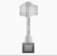
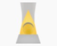
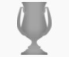
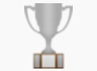
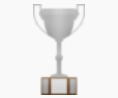

| Nomenclatura | Títulos | Temporadas | |
|---|---|---|---|
| Tríplice Coroa | 1 | 1968 | |
| 12º Maior Clube do Século XX da FIFA | 1 | 2000 |
| Competição | Títulos | Temporadas | |
|---|---|---|---|
| Copa CONMEBOL | 1 | 1993 |
| Competição | Títulos | Temporadas | |
|---|---|---|---|
|  | Campeonato Brasileiro | 2 | 1968 e 1995 |
|  | Campeonato Brasileiro - Série B | 2 | 2015 e 2021 |
| Competição | Títulos | Temporadas | |
|---|---|---|---|
| Torneio Rio - São Paulo | 4 | 1962, 1964, 1966 e 1998 | |
| Taça dos Campeões Rio - São Paulo | 2 | 2015 e 2021 |
| Competição | Títulos | Temporadas | |
|---|---|---|---|
| Campeonato Carioca | 21 | 1907, 1910, 1912, 1930, 1932, 1933, 1934, 1935, 1948, 1957, 1961, 1962, 1967, 1968, 1989, 1990, 1997, 2006, 2010, 2013 e 2018 | |
|  | Torneio Início | 8 | 1934, 1938, 1947, 1961, 1962, 1963, 1967 e 1977 |
| Competição | Títulos | Temporadas | |
|---|---|---|---|
|  | Taça Guanabara | 8 | 1967, 1968, 1997, 2006, 2009, 2010, 2013 e 2015 |
|  | Torneio Rio | 8 | 11989, 1997, 2007, 2008, 2010, 2012, 2013 e 2023 |
| Conquistas | Títulos | Categorias | |
|---|---|---|---|
| Títulos Oficiais | 32 | 1 Continental, 4 Nacionais, 6 Interestaduais e 21 Estaduais |